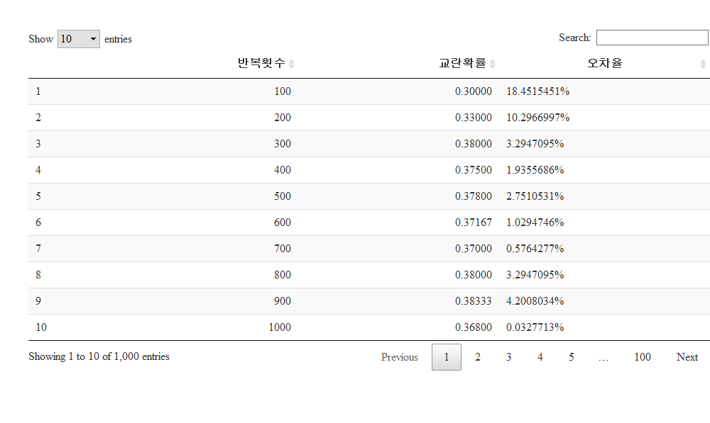
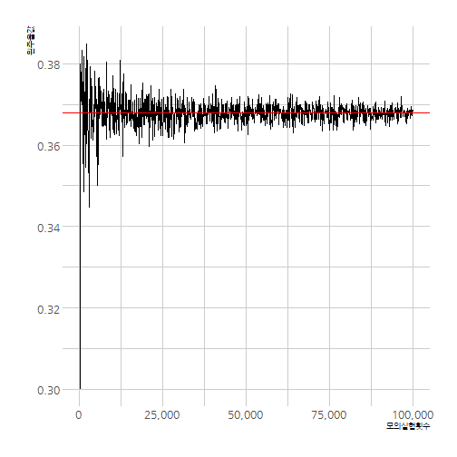

데이터 과학을 위한 R 알고리즘
산타 선물 문제 (교란순열, Derangement)
1. 교란순열(Deragnement)
교란순열(Derangement)은 모든 원소의 위치를 바꿔어 원래 위치한 원소가 전혀 다른 위치한 순열이다.
예를 들어, “1”, “2”, “3”, “4” 숫자가 4개가 있는 경우 총, \(4! =\) 24 나열하는 경우의 수가 있다. 하지만, “1”은 “1”의 위치에 있지 말아야 하고, 동일하게 “2,3,4”도 “2,3,4”의 위치에 있으면 되지 않는다. 그런 경우를 빼면 총 9 개의 경우의 수가 있는데 이러한 사례가 교란수열의 좋은 본보기다. 1

즉, 숫자 4개를 배열하는 경우의 수는 24 경우가 있지만, 모든 원소의 원래 위치하지 않는 경우의 수는 9개가 있어 확률은 \(\frac{9}{24}=\) 0.375가 된다.
2. 교란순열 수식을 통한 증명 -
교란순열이 전체 순열에서 차지하는 확률을 계산하려면, 분자와 분모로 나눠어서 증명한다.
2.1. 분모
분모는 첫번째 사람이 \(n\) 개를 선택하고, 두번째 사람이 앞선 사람이 선택한 1개를 빼고 \(n-1\), 세번째 사람은 앞선 사람이 선택한 2개를 빼고 \(n-2\), 가 되고, \(\cdots\) 마지막 사람은 당연히 1개만 남아 선택지가 없다. 이런 경우의 수는 \(n \times (n-1) \times (n-2) \times \cdots 2 \times 1 = n!\)
2.2. 분자
교란순열인 분자의 경우의 수는 조금 복잡해서, 문제를 간단히 하기 위해서 실패하는 사례를 먼저 생각해보자.
- 조합 경우의 수 일반식: \(C(n,k) = \frac{n!}{k!(n-k)!}\)
- 한사람이 숫자를 하나 잘못뽑는 경우: \(C(n,1)\), \((n-1)!\) 경우의 수가 남음
- 두사람이 숫자를 두개 잘못뽑는 경우: \(C(n,2)\), \((n-2)!\) 경우의 수가 남음
- …
- \(n-1\) 사람이 숫자를 \(n-1\)개 잘못뽑는 경우: \(C(n,n-1)\), \(1!\) 경우의 수가 남음
- \(n\) 사람이 숫자를 \(n\)개 잘못뽑는 경우: \(C(n,n)\), \(0!\) 경우의 수가 남음
\(k\) 사람이 숫자를 잘못 뽑는 경우, 실패사례를 일반화하여 수식으로 표현하면 다음과 같다.
\[C(n,k)(n-k)! =\frac{n!}{k!}\]
포함-배제 원칙(inclusion-exclusion principle)을 적용하여 교한순열을 표현하여 실패사례를 나타내보자.
\[\text{1명 잘못 뽑음} - \text{2명 잘못 뽑음} + \text{3명 잘못 뽑음} - \text{4명 잘못 뽑음} + \text{5명 잘못 뽑음} \pm \cdots\] 앞서, 정의한 수식을 대입해보자.
\[{n \choose 1}(n-1)!+{n \choose 2}(n-2)!-\cdots \pm {n \choose n}0! =n!+\sum_{i=1}^n (-1)^i{n \choose i} (n-i)! = \frac{n!}{1!} - \frac{n!}{2!} + \frac{n!}{3!} - \frac{n!}{4!} + (-1)^{n+1} \frac{n!}{n!}\]
따라서, 실패한 경우의 수는 \(n!\)을 앞으로 빼서 정리하면 다음과 같다.
\[n! \Bigg( \frac{1}{1!} - \frac{1}{2!} + \frac{1}{3!} - \frac{1}{4!} + (-1)^{n+1} \frac{1}{n!} \Bigg)\]
이제 확률을 계산하면 \(n!\)로 나눠주면 실패확률이 된다.
\[\text{실패확률} = \Bigg( \frac{1}{1!} - \frac{1}{2!} + \frac{1}{3!} - \frac{1}{4!} + (-1)^{n+1} \frac{1}{n!} \Bigg)\]
성공 확률을 계산하려면 1 에서 빼면 된다.
\[\text{성공확률} = \frac{1}{2!} - \frac{1}{3!} + \frac{1}{4!} + (-1)^{n+1} \frac{1}{n!} \approx \lim_{n\to\infty} \frac{!n}{n!} = \frac{1}{e} \approx 0.3679 \dots\]
3. 교란순열 사례 - 산타선물
산타선물 문제를 컴퓨터의 도움으로 풀어보자.
3.1. 산타선물 모의실험 함수
사람이 10명 모여있고, 각자 선물을 줘야 하는데 본인에게 선물을 주는 것은 누구도 원치 않기 때문에 실패로 가정하고, 이를 함수로 작성하고 나서, 모의실험을 10,000회 실시하고 이론값(0.3678794)과 비교한다.
# library(tidyverse)
# library(hrbrthemes)
# library(extrafont)
# loadfonts()
# 1. 산타 선물 뽑기 모의실험 (1회)
secret_santa <- function(person=10) {
# 참가자 설정
person <- 10
gift <- 1:person
# 한번 뽑기 시도
draw <- sample(gift, size=person, replace = FALSE)
# 뽑기 결과: 합이 0 이면 성공
result <- ifelse( sum(gift == draw) == 0, TRUE, FALSE)
return(result)
}
# 2. 산타 선물 뽑기 모의실험 반복실험
## 2.1. 이론값
1/exp(1)[1] 0.3678794
## 2.2. 모의실험 값
mean(replicate(10000, secret_santa()))[1] 0.3774
3.2. 산타선물 모의실험 수렴확인
회차별 모의실험을 수행하기 위채서 별도로 simulate_santa라는 모의실험 반복함수를 생성시키고 나서, 모의실험 횟수가 증가함에 따라 이론값에 수렴해 나가는 것을 표와 그래프로 확인한다.
# 3. 모의실험값이 이론값에 수렴함을 시각화 -----------------
## 3.1. 모의실험 횟수 함수
simulate_santa <- function(iter=1000) {
santa_mean_v <- mean(replicate(iter, secret_santa()))
return(santa_mean_v)
}
## 3.2. 모의실험 횟수
santa_lst <- list()
for(i in 1:10^5) {
if(i %% 100 == 0) {
santa_lst[[length(santa_lst)+1]] <- i
}
}
## 3.3. 모의실험 횟수 증가 모의실험
iter_v <- santa_lst %>% unlist
santa_v <- map(santa_lst, simulate_santa) %>% unlist
santa_df <- data.frame("반복횟수"=iter_v, "교란확률"=santa_v)
## 3.4. 표로 정리
santa_df %>%
mutate(오차율 = scales::percent(abs(교란확률 - 1/exp(1)) / (1/exp(1)))) %>%
DT::datatable() %>%
DT::formatCurrency("교란확률", currency ="", interval = 3, mark = ",", digits = 5)
## 3.5. 수렴 시각화
ggplot(santa_df, aes(x=반복횟수, y=교란확률)) +
geom_line() +
theme_ipsum(base_family="NanumGothic") +
labs(x="모의실험횟수", y="원주율값") +
scale_x_continuous(labels = scales::comma) +
geom_hline(yintercept = 1/exp(1), color="red")